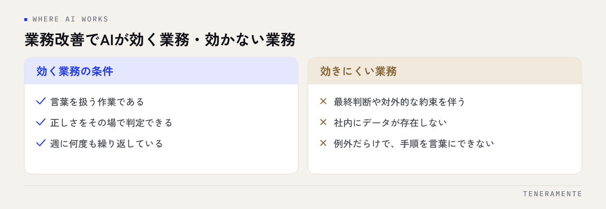

業務改善にAIを使うとき、最初にやるべきは「ツールを契約すること」ではなく、AIが効く業務を1つ見つけることです。生成AI（ChatGPT・Claude・Gemini など）が得意なのは、言葉を扱う作業と、繰り返しの多い作業。この記事では、効く業務と効かない業務の見分け方、部門別の具体的な使い方、効果が出やすくリスクが低い順の始め方を、中小企業の現場目線で整理します。
📌 この記事の結論
業務改善にAIを使う最初の一手は、ツールの契約ではなく、「言葉を扱い、正しさをその場で判定でき、週に何度も繰り返す」業務を1つ選ぶことです。社内向け文章の下書き・要約から始め、効果を作業時間で測るのが、失敗の少ない順番です。
01業務改善でAIが効く業務・効かない業務の見分け方
生成AIは万能ではありません。向き不向きを最初に押さえると、期待外れが減ります。判断の目安は次の3つの問いです。

- 入力と出力が「言葉」か（文章・表・メール・議事録など）
- 出力の正しさを、その場で人が判定できるか
- 同じ形の作業を週に何度も繰り返しているか
3つとも「はい」なら、AIが効く業務です。要約、下書き、分類、言い換え、表の整形、過去資料の検索といった作業がここに入ります。たとえば「見積書の説明文を整える」は効きますが、「値引きに応じるかを決める」は効きません。逆に、最終判断や対外的な約束を伴う作業、社内にデータが存在しない作業、例外だらけで手順が言葉にできない作業はAIに向きません。「AIで何ができるか」から考えると迷子になります。「この作業は3つの問いに当てはまるか」から考えてください。
02部門別の使い方：営業・事務
営業
商談後の音声メモや箇条書きを渡して、議事録と次のアクションを整理させる。過去の提案書と顧客の課題メモから、提案書の骨子を下書きさせる。顧客への返信メールを「丁寧・簡潔」の2案で出させて選ぶ。営業がAIに任せるべきは書く時間であって、決める時間ではないと線を引いておくと使い方がぶれません。
事務
定型の案内文や社内通知の作成、届いた書類の要点整理、Excelに入れる前の表の整形、マニュアルの読みやすい書き直し。事務部門は言葉を整える作業が最も多い部門なので、AIの効果が最初に見えやすい場所です。たとえば、取引先ごとに少しずつ違う案内文を、共通の下書きから相手に合わせて言い換えるだけで、毎回ゼロから書く時間がなくなります。
03部門別の使い方：経理・採用・カスタマー対応
経理
仕訳そのものを任せるのではなく、「この経費で確認すべき点は何か」というチェック観点の洗い出し、月次報告の文章化、規程の該当箇所の検索に使います。数字の最終確認は必ず人が行います。
採用
求人票の下書き、応募者への連絡文、面接での質問項目の設計、面接メモの整理。合否の判断そのものは、公平性の観点からもAIに委ねません。
カスタマー対応
よくある質問への回答の下書き、問い合わせ内容の分類、対応履歴の要約。社内マニュアルや過去の回答を読み込ませる RAG（Retrieval-Augmented Generation：社内データ検索）に進むと、担当者ごとの回答のばらつきも減らせます。
部門別の活用例をさらに詳しく知りたい方は、中小企業のChatGPT業務活用ガイドをご覧ください。
04最初の一歩の選び方：効果が出やすく、リスクが低い順
どの業務から始めるかは、「効果」と「リスク」の2軸で決めます。リスクは、出力が社外に出るか、個人情報や機密を含むか、間違ったときの被害が大きいか、で判断します。
| 順番 | 業務の例 | リスクの考え方 |
|---|---|---|
| 1 | 社内向け文章の下書き・要約 | 社内で完結し、間違いは読めば分かる |
| 2 | 議事録・会議メモの整理 | 個人情報を除けば低リスク |
| 3 | 社内FAQ・マニュアル検索（RAG） | 閲覧権限に沿った設計が前提 |
| 4 | 対外文書の下書き（人が確認して送る） | 送信前の確認を工程に固定する |
| 5 | 定型作業の自動化・専用アプリ化 | 効果は大きいが、設計と保守が要る |
上から順に1つずつが原則です。最初から4や5を狙うと、ルールも判断基準も未整備のまま社外に影響が出て、社内の反対が強まります。1で「時間が減った」を体感してから次に進む方が、結果として早く広がります。社外に出る文書は、送信前に人が確認する工程を手順に固定しておけば、リスクは大きく下げられます。
05ありがちなつまずき
- ツールの契約が先で、用途が後回しになる
- 一人だけが使っていて、会社としての効果にならない
- 「入力してよい情報」の線引きがなく、現場が怖くて使わない
- 出力を完璧にしようとして、手直しに元の作業以上の時間をかける
- 効果を測っていないため、続ける根拠も止める根拠もない
効果の測り方
売上ではなく「その作業にかかっていた時間」で測ります。始める前に1回分の所要時間を記録し、AIを使った後と比べるだけで十分です。数字を盛る必要はありません。
どれも珍しい失敗ではありません。共通するのは、用途・ルール・測り方の3つを決めずに始めていることです。逆に、用途（どの作業を誰が）、ルール（入力してよい情報とだめな情報）、測り方（1回分の作業時間）を紙1枚に書いてから始めれば、つまずきの大半は避けられます。
06続けるための測り方と見直しのタイミング
使い始めたら、続けるかどうかは感覚ではなく記録で判断します。やることは4つです。
- 始める前に1回分の所要時間を記録する。比べる基準がないと、効果を後から言えません
- 週に一度、使った回数と困った点を集める。使えなかった場面こそ、ルールと使い方を直す材料になります
- ルールを1行ずつ育てる。「この情報は入れてよい」「この文章は送信前に確認する」のように、困った点から生まれた決まりを足していきます
- 効果が出た業務の隣へ広げる。同じ部門の似た作業から順に広げると、ルールも下書きの型もそのまま使えます
見直しは月の区切りで十分です。使われていない用途は外し、毎日使っている用途は手順書に組み込む。この入れ替えを続けることで、AIの活用は担当者の習慣から会社の仕組みへ変わっていきます。
07よくある質問
無料版のChatGPTでも業務改善に使えますか？
どの部門から始めるのがよいですか？
効果はどう判断すればよいですか？
08「使う」から「仕組みにする」へ
個人がAIを使う段階で止まると、担当者が変わった瞬間に効果が消えます。次の段階は、うまくいった使い方を業務手順に組み込み、繰り返しの多い作業は自動化し、毎日さわる業務は専用のアプリに置き換えることです。仕組みにする段階では、「誰がやっても同じ結果になるか」「担当者が休んでも回るか」を判断基準にします。Excelやチャットで回している業務をアプリ化する考え方は、AI業務改善ツール導入 完全ガイドで詳しく解説しています。
TENERAMENTEは名古屋のAI開発企業として、AI活用支援で、用途の棚卸し・ツール選定・利用ルールの策定から、部門別の研修、RAG構築、業務自動化、月次の定着支援までを、必要な部分だけ組み合わせてご提供しています。「うちの業務はどれから始めればいいか」を一緒に整理するところからで構いません。初回相談は60分無料です。お問い合わせからご相談ください。